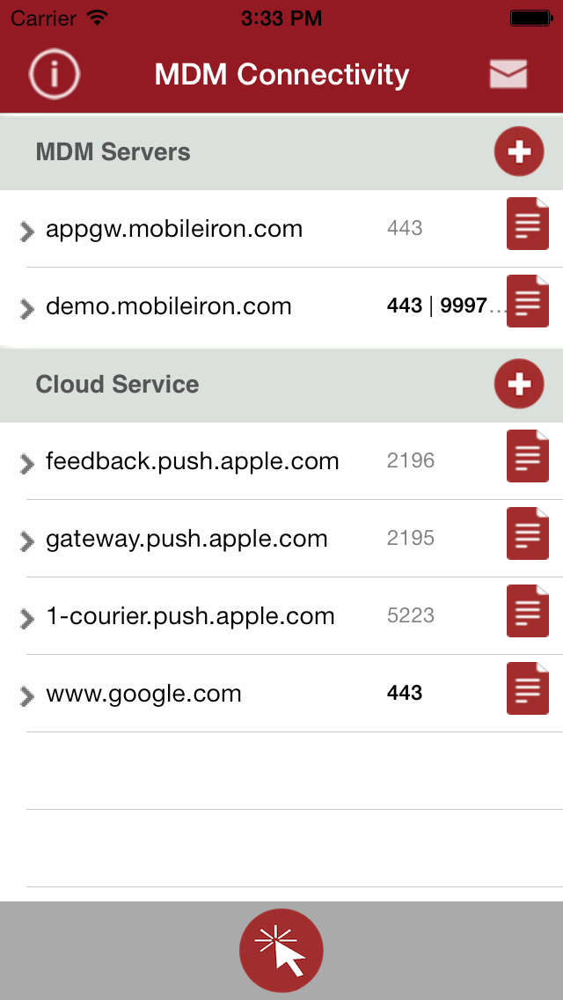
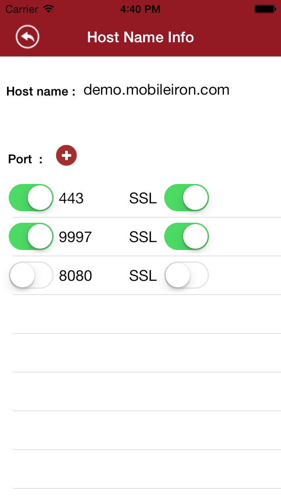
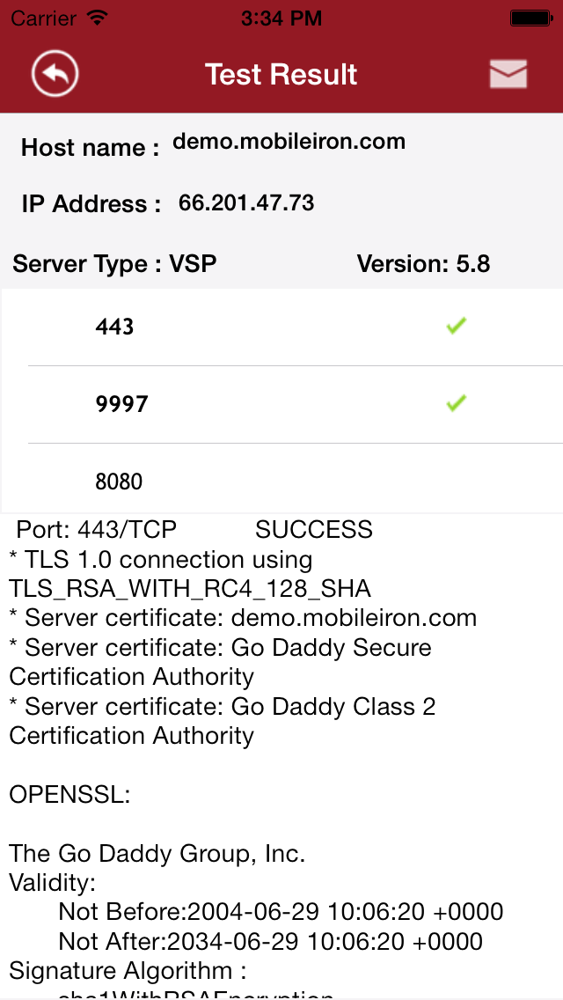
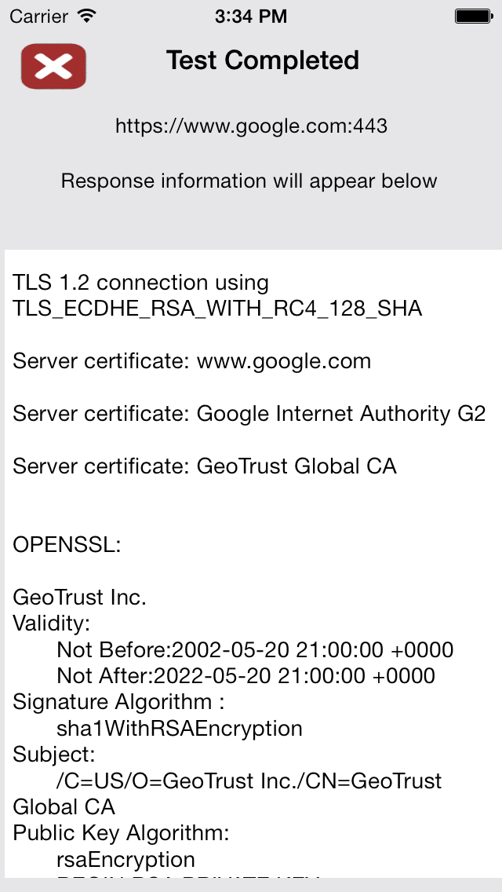
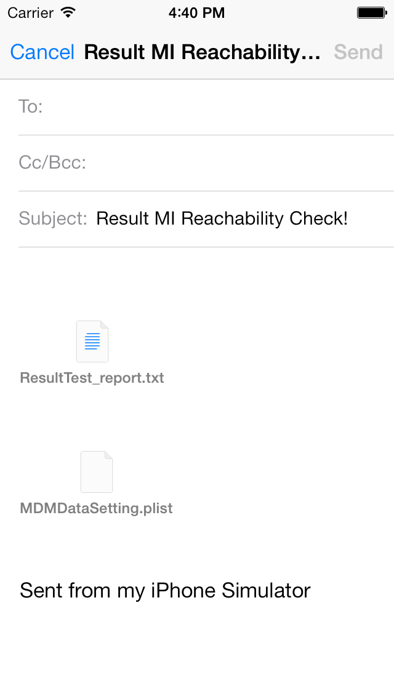
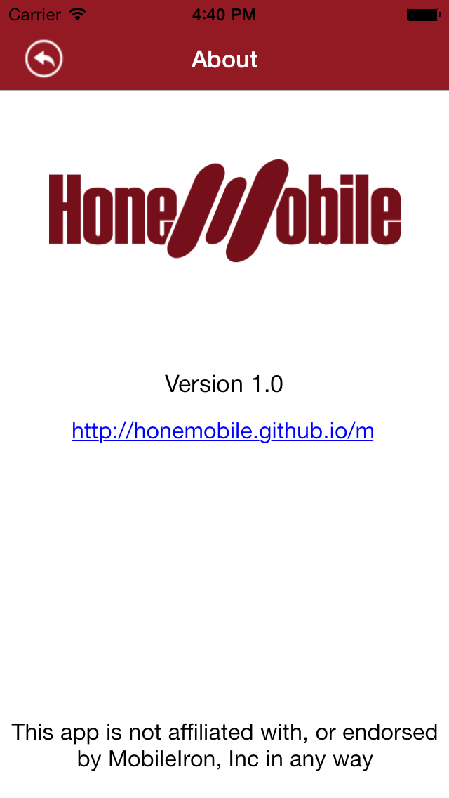

MDM Connect Application is the easiest way to check whether your MDM service has any network issue. You can add your MDM Server or just enable test to cloud services (e.g. Apple Push Notification Services), and run test. After test result is generated, you can send email to yourself for further analysis.
The below are some screenshots of the application, please click to view large size
     
The feature allows you to check whether MobileIron MDM services are available or any issue happened. There are couple default MDM servers being available in the app, but you can add more servers for your testing.
The feature will let you know what SSL Certificates are running in details such as Cert name, Cert description, status,... It helps you to quickly troubleshoot any problem with SSL on MDM servers.
As Apple or Google are third parties which are integrated in your application. But somehow, you get some problem which may come from those third parties. The feature is helping you to check Cloud Push notification servers to narrow down your problem.
Please use this app as guided by your IT administrator.
Having trouble with apps? Please contact support@honemobile.com and we’ll help you sort it out.